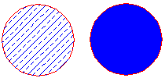
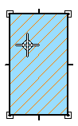
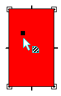
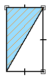

Fill command
The Fill command  places a fill inside a closed boundary. For example, you can fill an area defined by 2D geometry
and you can fill parts shown in drawing views.
places a fill inside a closed boundary. For example, you can fill an area defined by 2D geometry
and you can fill parts shown in drawing views.

You can set and modify fill properties using options on the Fill command bar.
-
When you click inside an object to fill it, the cursor location designates the fill insertion point.

-
The fill insertion point is also the fill handle. You can select the fill handle and drag the fill to another object.

-
If you use the Redo Fill option to refill the area based on a new boundary, the insertion point designates which side of the object will be refilled.

How do I
Place a fillFormat a fill
Refill a modified boundary
Learn more
Applying colors and patterns to closed boundariesLook up more details
Fill command barFill Properties dialog box